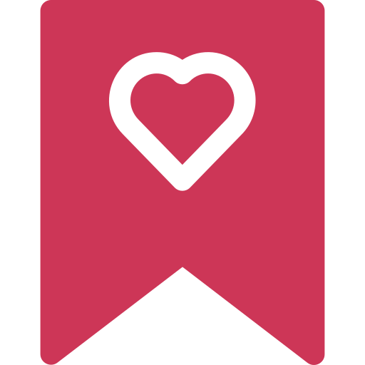

<div class="container-padding card-border-radius">
  <div class="relative container card-border-radius">
    <div class="content">
      <ion-icon name="card-sharp" class="icon text-color"></ion-icon>
      <div style="padding-top: 0.7rem">
        <ion-card-subtitle class="card-title">{{
          storeName
        }}</ion-card-subtitle>
        <ion-card-title class="card-subtitle">{{ location }}</ion-card-title>
      </div>
      <div *ngIf="fav > 0">
        
      </div>
    </div>

    <div class="absolute child">
      <ion-card
        *ngIf="now; else secondary"
        color="tertiary"
        class="card-border-radius"
      >
        <div style="padding: 10px">
          <ion-card-title class="child-card-title"
            >{{ start | slice: 0:-3 }} - {{ end | slice: 0:-3 }}</ion-card-title
          >
          <ion-card-subtitle class="child-card-subtitle toLowerCase">{{
            day
          }}</ion-card-subtitle>
        </div>
      </ion-card>
      <ng-template #secondary>
        <ion-card color="secondary" class="card-border-radius">
          <div style="padding: 10px">
            <ion-card-title class="child-card-title"
              >{{ start | slice: 0:-3 }} -
              {{ end | slice: 0:-3 }}</ion-card-title
            >
            <ion-card-subtitle class="child-card-subtitle toLowerCase">{{
              day
            }}</ion-card-subtitle>
          </div>
        </ion-card>
      </ng-template>
      <div class="min-fee text-color">min sipariş tutarı {{ minFee }},00tl</div>
    </div>
  </div>
</div>
